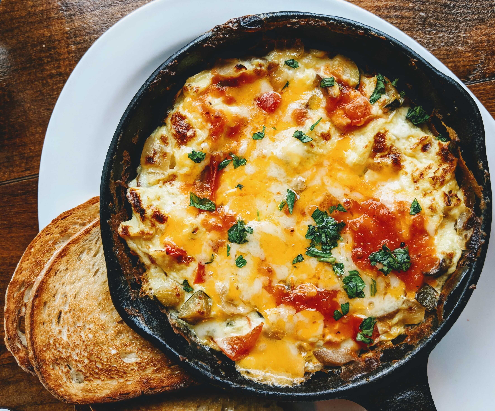

Omleto receptas "Kiaušinukas"
Karantino metu daugelis mūsų praleidžiame nemažai laiko namie. Mažiau vaikštome į restoranus, kavines, tad
aktualu tampa maisto gaminimas namuose. O vienas lengviausiai ir greičiausiai paruošiamų patiekalų - omletas.
Tai baltymų šaltinis, kurių jums reikia palaikyti tinkamą raumenų tonusą. Šiam omletui pagaminti pateikiu ingredientus ir ruošimo tvarką
Ingredientai
| 5 kiaušiniai |
Geriausi rudų lukštų, M dydžio |
| 2 svogūnai
|
Labiausiai tinka mėlynieji
|
| 50 gramų sviesto
|
Geriausia naudoti 82%
|
| 1 raudona paprika
|
90mm skersmens
|
| Žiupsnelis druskos
|
Su jodu dėl sveikatingumo
|
Ruošimo eiga
- Kiaušinius sukulkite į dubenį. Atidžiai pažiūrėkite, ar nėra įkritųsių kiaušinio lūkštų. Įberkite druskos ir gerai išplakite
- Svogūnus nulupkite ir supjaustykite kubeliais. Galite iškart viską suberti į dubenį su kiaušiniais.
- Supjaustykite papriką taip pat kubeliais. Suberkite į bendrą masę kartu su kiaušiniais ir svogūnais. Gerai išmaišykite
- Įkaitiname keptuvę bei į ją įdedame sviestą. Su tinkama jūsų keptuvei mentute paskleidžiame sviestą per visą paviršių keptuvėje
- Į keptuvę supilame visą paruoštą turinį dubenyje bei kartkartėmis pamaišydame, kepame apie 7 minutes
- SKANAUS
